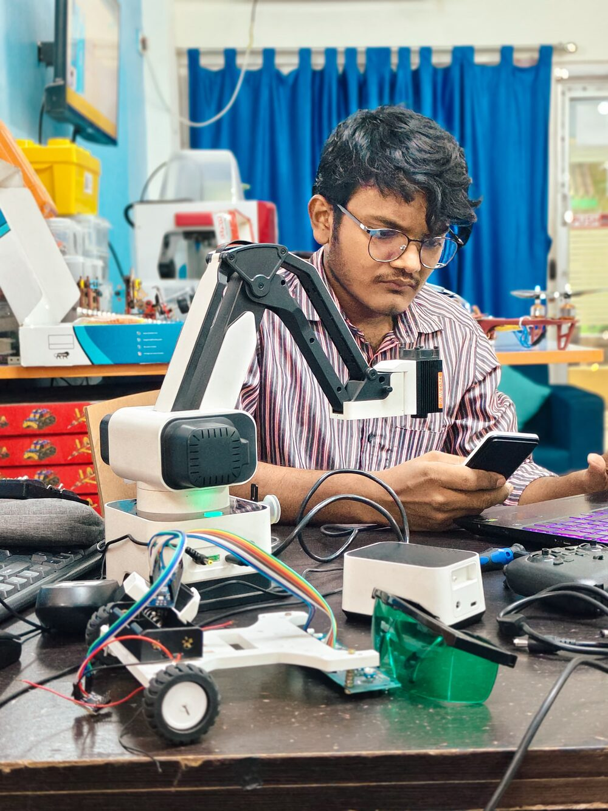

Software and AI
Agentic workflows, RAG systems and vector databases, plus computer vision for classification and segmentation.

I'm Avishek Mondal. I build AI systems and connect them to the real world: retrieval pipelines on one side, cameras, motors and microcontrollers on the other.
I also teach robotics and AI. Explaining an idea to a beginner is the fastest way I know to find out whether I understand it.
Agentic workflows, RAG systems and vector databases, plus computer vision for classification and segmentation.
Robots and IoT devices built on ESP32 and ESP8266 boards, with cameras, motors and sensors.
Tools that solve a concrete problem, not demos.
Workflows where a model routes, checks and decides.
Ingestion, embeddings and retrieval over real documents.
Classification and segmentation on real imagery.
Boards, sensors, motors and cameras working together.
Understanding how the pieces fit before building them.
Indian Institute of Information Technology, Kalyani
Reboot Robotics Academy
Robotics, AI and embedded systems, combining technical development with practical teaching and project mentoring.
Included a flood-modelling and AI-drone team that earned national runner-up recognition.
Line-following robots, robotics fundamentals and CosmoClench YOLO-based person detection.